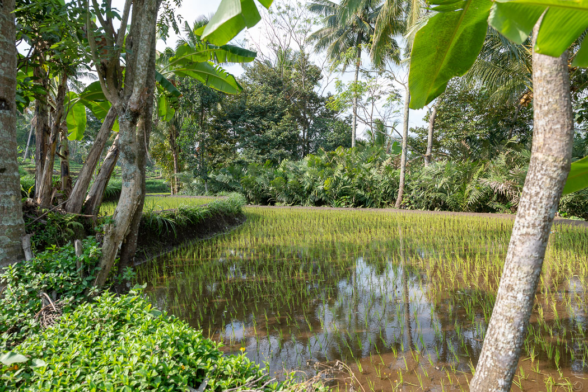
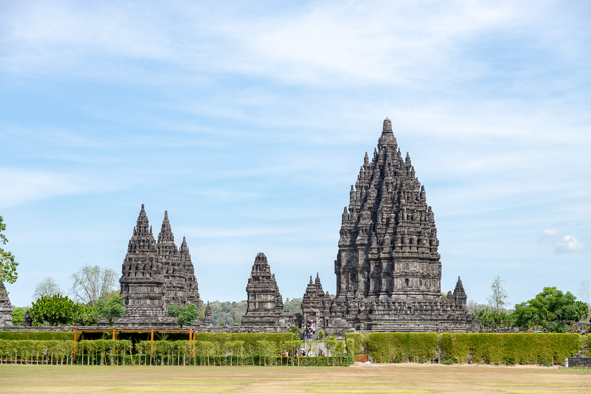
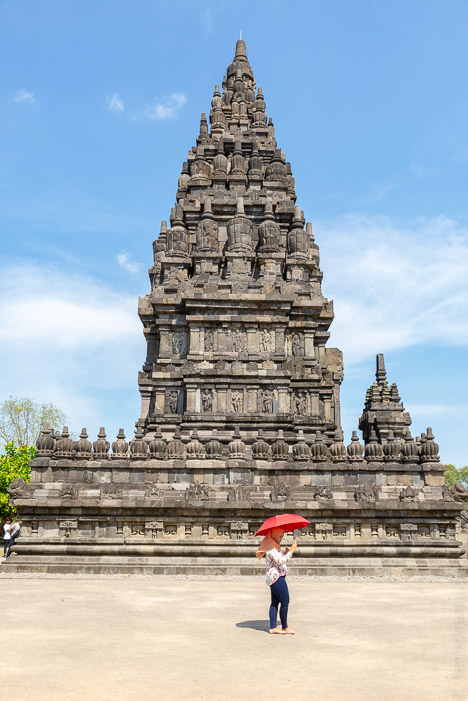
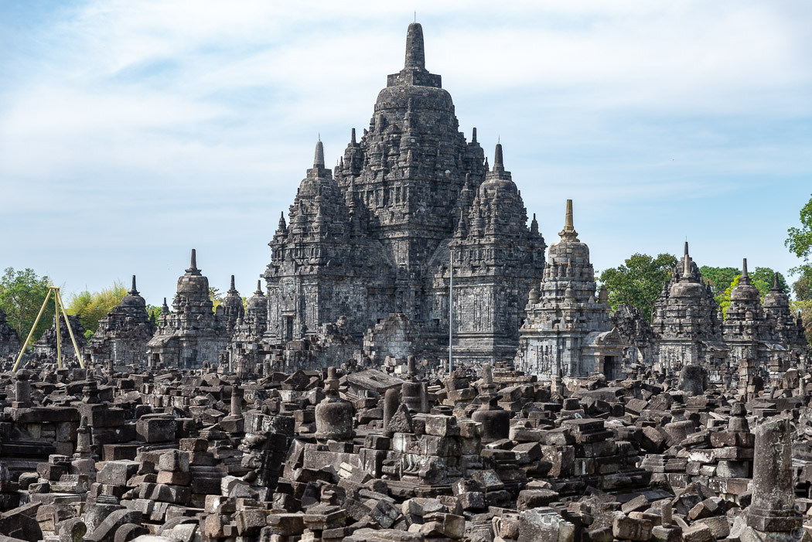

Da die Buddhisten mit dem Borobudur so geklotzt hatten, wollten die Hindus nicht kleckern und haben hundert Jahre später einen eigenen Tempel in die Nähe gebaut. Hier wurden Shiva und seine Kollegen verehrt. Da die Anlage recht nah an Yogjakarta liegt, haben wir uns einen Roller geliehen um selbst hinzufahren. Als Fahrer ist der indonesische Straßenverkehr noch um einiges aufregender als von der Rückbank aus. Auf den Straßen ist so viel los, dass der Linksverkehr keine Probleme macht. Autos haben hier keine Schnitte. Die unzähligen Motorräder nehmen sich überall die Vorfahrt und überholen links und rechts und zwischen den Autos.
Der Weg wurde immer schöner, zwischen Reisfeldern und durch kleine Dörfer. Mit Google Maps in der Hosentasche kann nur noch eins schiefgehen: Wenn man das falsche Ziel eingibt. Das ist uns klar geworden, als die immer enger werdende Straße endgültig zu einem Trampelpfad wurde. „Sie haben das Ziel erreicht“. Die Scheune sah nicht sehr hinduistisch aus, aber es gab ja noch ein paar andere Orte in der Nähe, die sich „Prambanan“ nannten, die wir ausprobieren konnten.
Der richtige Prambanan lag dann doch recht einfach zu erreichen an einer achtspurigen Straße. Die Hauptgruppe besteht aus sechs Tempeln, die von einer recht kleinen quadratischen Grundfläche steil aufragen und sich oben zu einer Spitze verjüngen. Der größte ist fast 50m hoch und recht eindrucksvoll. Von allen vier Seiten führen Treppen in kleine Kapellen hinauf, wo jeweils ein Gott aus Stein auf Besuch wartete. Hier war es deutlich ruhiger als beim Borobudur.
 Ein paar Schritte weiter hatten die Neider der buddhistischen Fraktion später auch wieder einen Tempel hingesetzt, der interessanterweise ganz ähnlich wie die hinduistischen aussieht.
Auf dem Rückweg sind wir in die Rush Hour geraten. Während die Autos kaum vorankamen, suchten sich die Motorräder ihren Weg zwischen den Autos durch, über Bürgersteige, auf der Gegenspur. Man wird beim Linksüberholen auf schmalen Seitenstreifen selbst noch links überholt.